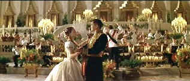

| Anna and the
King/B-,B+ |
| Fox/1999/
147/ANA 2.35 |
The huge sprawl of the Siam docks dominates the screen. Englishwoman
Anna Leonowens and her young son Louis take in the exciting spectacle as they arrive in Siam by
ship for Anna to take up duties as tutor to the King's oldest son. Anna and the King announces
itself with lavish flourish, but, you ain't seen nothin' yet. In fact, the rich production and
costume design tapestry is so consistently brilliant throughout the film it overshadows the
strangely cold yet overwrought drama and romance. Based on the same historical letters as the grand
Rogers and Hammerstein musical The King and I, coy elements appropriate to the musical genre
still cling to this production.
 |
| Shall we dance? ©Fox |
Anna teaches the children of the royal family, tries to teach the king a
thing or too and her son Louis provides an added measure of spice to the brew. Anna gets to plan a
royal party, defends the king against ugly colonial remarks, and even finds a way for King Mongkut
to face up to overwhelming rebel forces.
There is a cumbersome sense about the production, as if it lumbers on with
awkward steps. The pacing seems uneven. Maybe the mixed tones prevent the story from coming to
life. There are times when Anna and the King is like a children's tale and times when it
wants to generate some sexual heat. It can lunge in any direction at any moment. Only the
spectacular nature of the filming is consistent. Cinematographer Caleb Deschanel delivers grandly
lush vistas for director Tennant. I found the score from George Fenton failed to blend elements of
East and West. It too, ambled about the film road like a drunken elephant.
The action is not very convincing, the politics pretty awkward, so that
leaves the romance. Anna and the King hinges on the sexual chemistry generated by its stars.
Unfortunately, they too come up short. While I admire Chow Yun-Fat enormously, I was never
comfortable with his King Mongkut. He seemed uncomfortable in brocaded garments and high collars,
and whoever gave him that haircut he wears through the first third of the movie should have their
scissors impounded as criminal evidence. Jodie Foster, another favorite of mine, is rather stiff
herself as Anna. The role calls for cold, rigid, tough and determined, and Foster gives Anna plenty
of those characteristics, but whenever emotion boils over, it seems patently false.
The explosion of color and intricate costuming is transferred with fine
energy. Colors explode from the screen. The enticing spectacle of 19th century Siam delivers a
startling range of colors and the DVD is up to the task of delivering them with uniform beauty.
Most of the images are rendered sharply, but a number of scenes are plagued by high transition edge
peaking. Shadow detail is fine and film grain looks tight. The Dolby Digital Surround is very
active and creates a three-dimensional ambiance with grace. Dialogue was not always easy to
understand, but that was more a function of the words and accents of the actors rather than the DVD
recording.
Director Andy Tennant delivers an enthusiastic and informative audio commentary for
the special edition. Several short featurettes are included and six deleted scenes are available
with or without commentary from Tennant.
|
|
|
|

Selections from the feature archive include articles on
Akira Kurosawa, Frank
Darabont, Blonde Bimbos, Hollywood Street Gangs, or Vietnam: The
Hollywood Pariah, and many more....
Sturges Emerges
Preston Sturges was Hollywood's resident comic genius for more than a decade. His movies are
timeless. Click on his image to read all about it.

 Gary Morris's insightful publication Bright Lights
Film Journal turns the celluloid in films from a unique perspective. Click on the image above
for more pure movie views. Gary Morris's insightful publication Bright Lights
Film Journal turns the celluloid in films from a unique perspective. Click on the image above
for more pure movie views.

Click on the link to visit the judge's chambers.
Imaging Science Foundation
The Imaging Science Foundation promotes proper standards in home theater viewing. ISF trained
technicians offer monitor calibration services to consumers. The difference in a properly
calibrated monitor can be astounding. Click on the image to find an ISF member near you.

Information on film sound in theaters and home theaters. Lots of helpful information provided in a
handsome interface.

The Movie Poster
Archive includes extensive poster images from the films of stars like Susan Hayward, Kirk Douglas,
Katharine Hepburn and many more. Our
featured star is Kirk Douglas. |